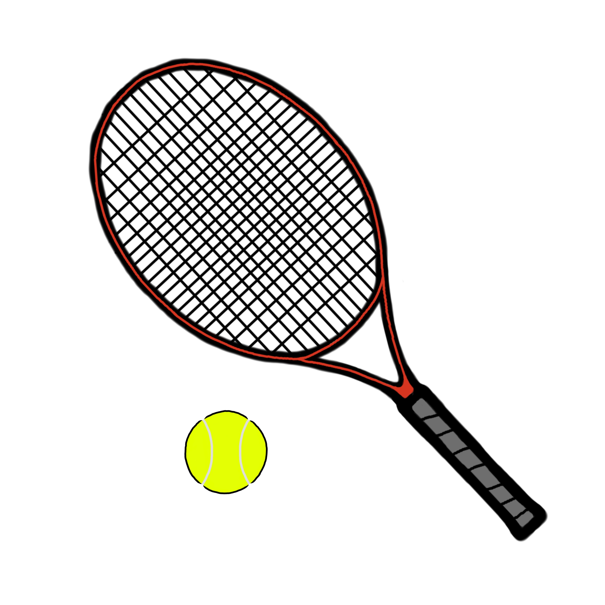
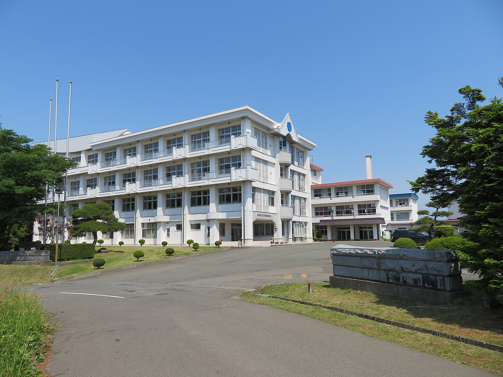
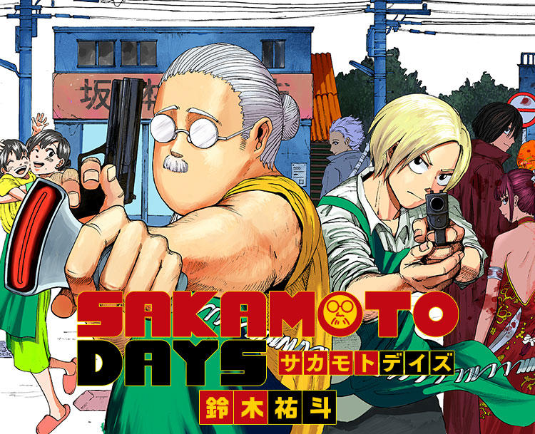

- 自己紹介をお願いします！
- 長所・短所は？
- 自分を動物に例えると何ですか？
- 自分をIT機器に例えると何だと思いますか？
- ストレス発散方法はありますか？
- 一つ夢が叶うとしたら何をお願いしますか？
- 今後働く上で、モチベーションを高めるものは何だと思いますか？逆に、下げるものは何だと思いますか？
- 100万円あったら何に使いますか？
- 「オススメの○○」を教えてください！
岩手県花巻市出身の高橋慶です。高校は岩手県立花北青雲高等学校のビジネス情報科を 卒業しました。趣味は漫画・映画・ゲーム・音楽などインドアなものが多いです。 運動神経は良くない方ですが、ソフトテニスを経験していたのでラケット競技に関しては得意な方です。


長所は感情的にならずに物事の解決法を考えることができる点です。 短所はあまり自己表現が得意じゃない点です。
私を動物に例えると狸です。注意深く行動することができるタヌキの習性と自分の性格が 似ていると考えたからです。
私をIT機器に例えるとルーターです。情報共有を積極的に行って全体の活動を手助けしたいという考えが強いからです。
ストレス発散は大きめの音量で曲を聴きながら横になることです。曲を楽しみながら楽な姿勢をとることで 余計なことを考えすぎずに過ごすことができるからです。
一つ夢が叶うとしたら長い休みを頂いて世界をめぐる旅に出たいです。様々な国を見て回って自分の視野を広げたいと考えてます。
モチベーションを上げるために必要なものは目標だと思います。ゴールを自分で設けることでそこを目指して頑張れるからです。 下げるものは悪い労働環境だと思います。プライベートよりも長く過ごす環境が人間関係が悪いなど良くない要因があるとストレスが たまってモチベーションを下げてしまうと考えたからです。
将来のために投資を勉強してそれに使おうと思います。しかし全額は使わずに残りを家族や友人たちと楽しく時間を過ごすために使いたいです。
オススメの漫画を紹介したいです。題名は「SAKAMOTODAYS」で、元殺し屋の坂本太郎を中心に登場人物のゆるい掛け合いや 迫力のある戦闘シーンを楽しめます。作画や構図がすごく引き込まれるクオリティです。アニメ化も決定しています。

ページ上部に戻る